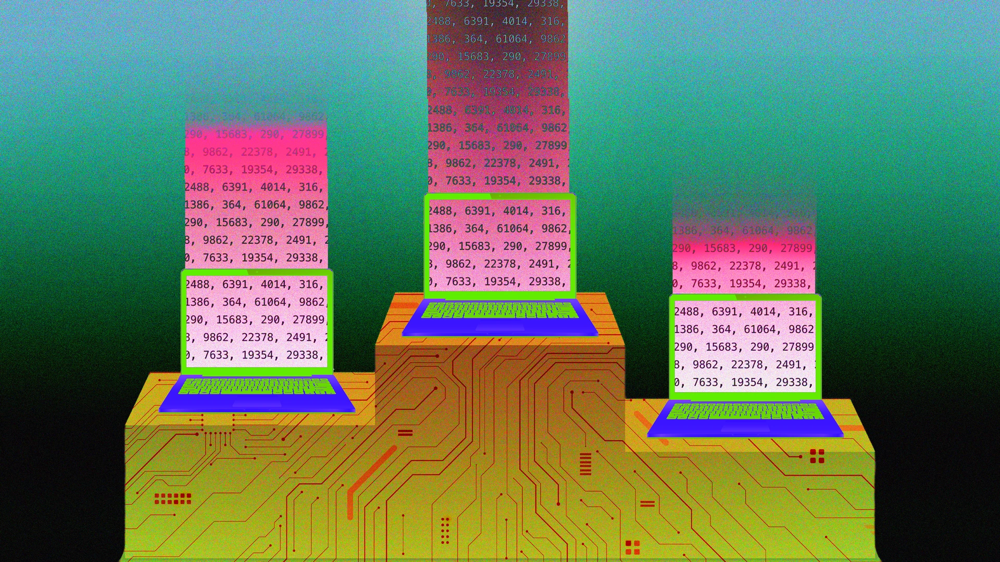
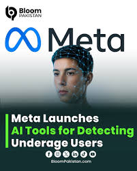
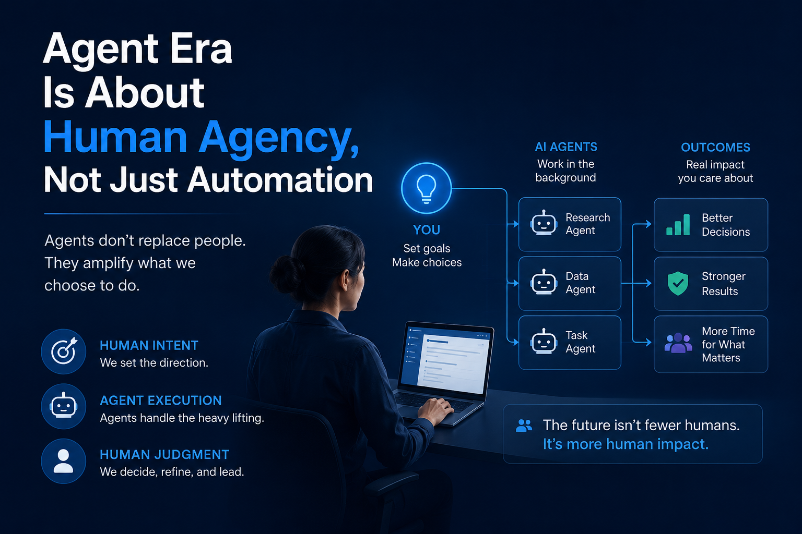
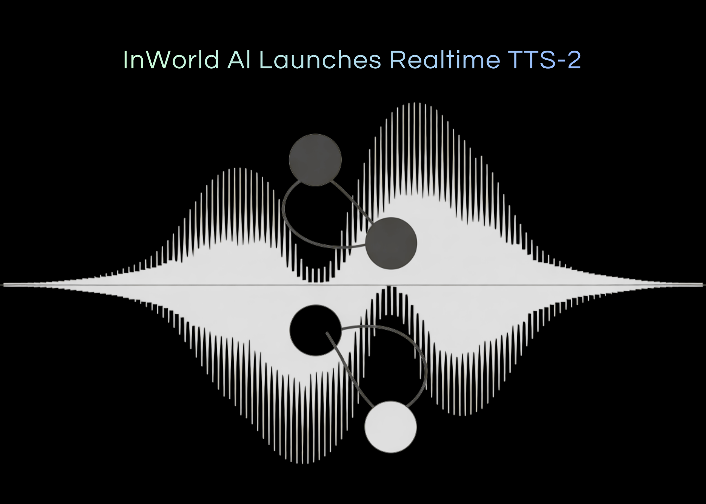
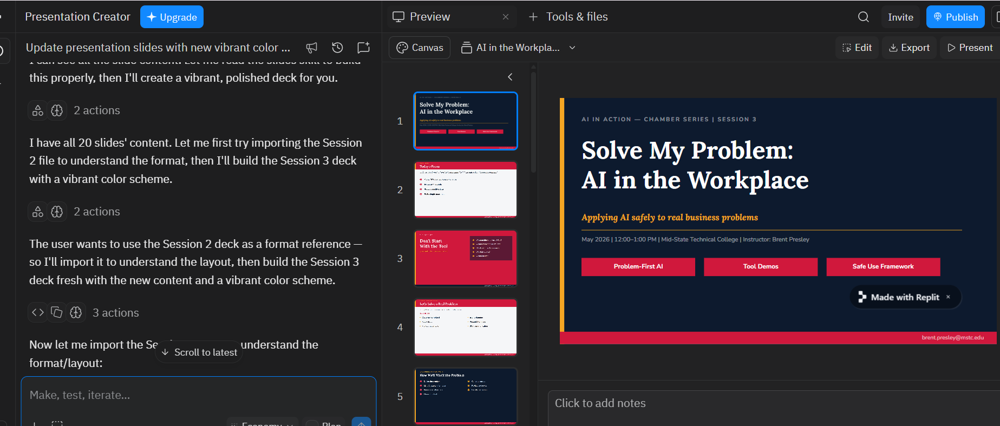
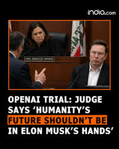
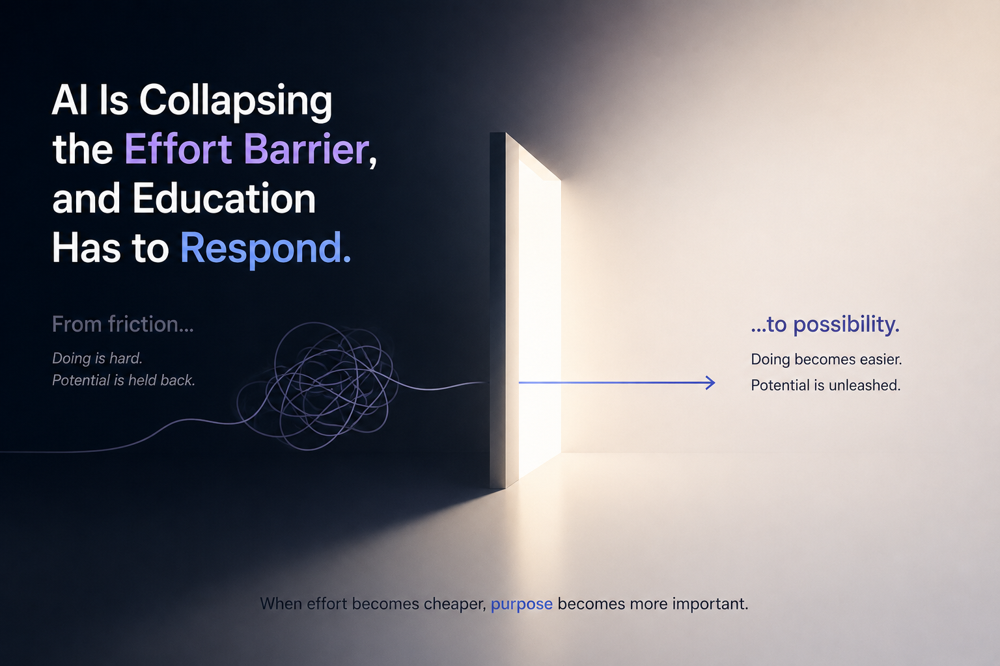
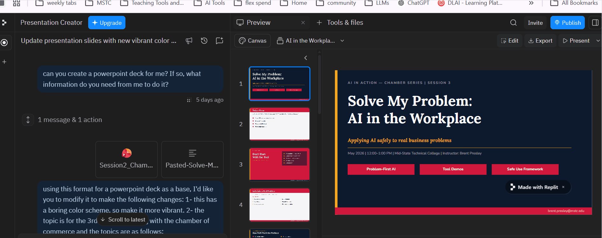
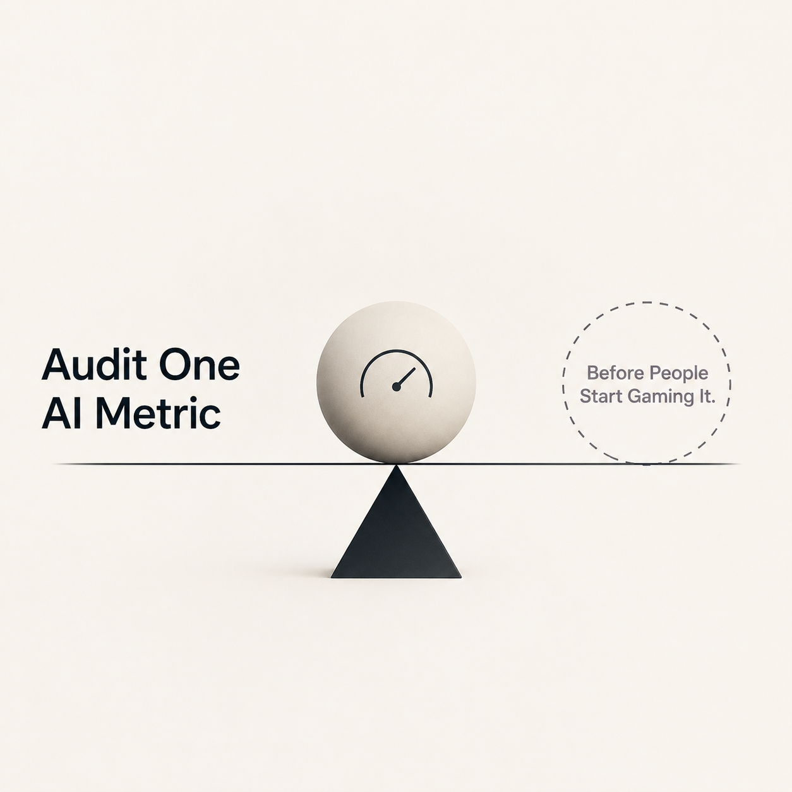

Artificial Insights
In This Issue

AI May Be Lowering the Barrier to Filing Federal Lawsuits

A new paper on pro se federal civil litigation suggests that self-represented federal civil case filings rose from a long-stable average of about 11% to 16.8% in FY2025, with the surge concentrated in formulaic case types such as civil rights and consumer credit. The broader implication is bigger than courts: any system that was partly regulated by human effort may start to bend once AI makes that effort cheap. Lawsuits, appeals, essays, recommendation letters, public comments, and complaint forms all become easier to produce at scale. Apparently paperwork was load-bearing infrastructure. That seems healthy.
Tokenmaxxing Turns AI Usage Into the New Lines-of-Code Metric

Engineers at major companies are reportedly burning tokens to climb internal AI usage dashboards or avoid looking insufficiently “AI-native.” Meta, Microsoft, Salesforce, and Shopify each show a different version of the same problem: once token use becomes a visible metric, people start optimizing for the metric instead of the work. Shopify’s shift from leaderboard language to usage dashboard language, plus circuit breakers for runaway agents, is the more sensible version. Everyone else appears to be rediscovering Goodhart’s Law, but with a cloud bill.
Elon Musk v. OpenAI Turns the Company’s Origin Story Into a Courtroom Drama
Elon Musk’s trial against OpenAI is now in its second week, and it is doing what major tech trials do best: dragging private texts, old grudges, control fights, romantic entanglements, and idealistic founding language into public view. Musk says OpenAI betrayed its original nonprofit mission by shifting toward a for-profit structure. OpenAI says Musk knew about for-profit discussions, wanted control, left after failing to get it, and is now attacking the company while running rival AI firm xAI. Today’s testimony from Shivon Zilis added another soap-opera layer because she served on OpenAI’s board, later became a Neuralink executive, has children with Musk, and was accused by OpenAI of serving as a kind of information channel back to him. Underneath the drama is a serious question: can an AI company claim a public-benefit mission while becoming one of the most valuable commercial platforms in the world?
Meta Will Use AI to Estimate Whether Users Are Underage

Meta is rolling out AI age-assurance systems that analyze photos, videos, text, interaction patterns, and signals such as apparent height and bone structure to identify likely under-13 users on Facebook and Instagram. Meta says this is not facial recognition, but it is still another example of platforms using AI to infer personal traits from behavior and media. The child-safety goal is real. So is the unease of a system looking at a teenager’s posts and body cues and saying, “The machine has guessed your age. Please proceed to verification.”
Microsoft Says the Agent Era Is About Human Agency, Not Just Automation

Microsoft’s 2026 Work Trend Index argues that AI agents are raising the ceiling on individual work while shifting human roles toward intent-setting, judgment, and ownership. The more interesting claim is that culture, management, and organizational systems explain more of AI’s impact than individual skill alone. In other words, buying agents is not the hard part. Redesigning work so humans and agents do not create a glittery productivity landfill is the hard part.

🛠️ ChatGPT for Clinicians Brings AI Into Verified Medical Workflows
The News: OpenAI has launched ChatGPT for Clinicians, a free version of ChatGPT for verified U.S. clinicians. It is positioned as a secure clinical reasoning and documentation partner, with cited medical evidence, higher usage limits on healthcare-focused models, clinical workflow skills, and CME tracking.
My Take: This is one of the clearer examples of AI moving from general-purpose chatbot into regulated professional workflow. The important part is not that doctors can ask ChatGPT questions. They already could. The important part is verification, citations, privacy framing, and workflow-specific design. That is where AI tools become infrastructure rather than novelty.
🛠️ Inworld Realtime TTS-2 Pushes Voice AI Closer to Natural Conversation

The News: Inworld released Realtime TTS-2 as a research preview for developers. The model is built for realtime conversation, conditions on the full audio exchange, responds to tone, pacing, and emotional state, supports natural-language voice direction, and preserves one voice identity across more than 100 languages. Inworld says the model is available through its API and Realtime API.
My Take: This matters because voice may become one of the most natural interfaces for AI. Text prompts are powerful, but they are not how most humans want to interact with systems all day. Better voice means better tutoring, simulations, accessibility tools, customer service agents, training scenarios, and games. It also means we are one step closer to help desks staffed by emotionally aware synthetic voices that sound compassionate while refusing to fix your account. Progress is complicated.
🛠️ Maket Turns Plain-Language Floor Plan Ideas Into Residential Layouts
The News: Maket is an AI floor plan studio that lets users generate, edit, and visualize residential layouts from plain-language requirements such as room types, shape, and square footage. The company describes the tool as a simple AI-powered workspace for creating new plans, refining layouts, and visualizing design styles.
My Take: This is a good one-off example of AI entering specialized professional workflows. It does not replace architecture, engineering, zoning, permits, accessibility rules, building codes, or the annoying fact that walls still need to stand up. But it can help people move from vague idea to visual draft much faster, which is exactly where many practical AI tools are becoming useful.
🛠️ Replit Slides Moves AI Coding Tools Into Presentation Workflows

The News: Replit is promoting an AI-powered slide tool that can create decks from scratch, use templates, import existing PowerPoint files, match styles, and export to PPTX, PDF, and Google Slides.
My Take: I tested this enough to say it is worth watching. It made a 20-slide deck, changed the color scheme, and matched the language and style surprisingly well. That does not mean it replaces judgment, but it does mean presentation generation is now part of the AI productivity race too. Apparently no document format is safe. PowerPoint had a long run.

🔬 The OpenAI Trial Is Really About Mission, Money, and Control

The fight between Elon Musk and OpenAI is not just a celebrity founder feud, although it is absolutely that too. Musk argues that OpenAI was founded as a nonprofit devoted to developing AI for the benefit of humanity, and that Sam Altman and Greg Brockman violated that founding promise by steering the company toward a for-profit structure. OpenAI’s response is that frontier AI required enormous compute, capital, and talent, and that Musk knew about for-profit discussions before leaving after he failed to secure control.
The trial has already produced several revealing moments. Musk testified for more than seven hours across three days. Under cross-examination, he acknowledged knowing about early for-profit discussions but said he had not read the “fine print” of a 2017 term sheet. He also acknowledged that xAI partly used OpenAI models to train Grok through distillation, which adds a neat little irony grenade to the middle of the courtroom. Today, Shivon Zilis testified. She is a former OpenAI board member, a Neuralink executive, and the mother of four of Musk’s children. OpenAI has argued that she helped keep Musk informed after he left, and court filings included texts where she asked Musk whether she should stay close to OpenAI to keep information flowing.
The soap opera details are not separate from the serious issue. They show how personal relationships, company control, board access, donor expectations, and billion-dollar strategy all blur together in the AI industry. OpenAI’s founding story was built around public benefit. Musk’s complaint says that public-benefit promise was betrayed. OpenAI says the public-benefit mission could not survive without a structure that could raise the money required to build frontier models. That is the heart of the case: was the for-profit turn a betrayal of the mission, or the only realistic way to pursue it?
If Musk wins, OpenAI’s structure could be disrupted, Altman and Brockman’s leadership could be threatened, and the court could send a message that nonprofit founding missions have legal teeth even when AI companies later need massive commercial funding. A Musk victory could also make donors, boards, and public-benefit organizations much more careful about mission language, because vague ideals could become enforceable obligations.
If OpenAI wins, the company’s current structure becomes much safer, and the broader industry gets another signal that mission-driven AI organizations can evolve into commercial giants if they argue that scale requires capital. That would strengthen the “we need money to build safely” model that dominates frontier AI. It would also let OpenAI frame Musk’s challenge as control, rivalry, and regret rather than public-interest enforcement.

🎓 AI Is Collapsing the Effort Barrier, and Education Has to Respond

The pro se lawsuit paper is not technically an education story, but it should make educators pay attention. If AI can help more people file formulaic lawsuits, then it can also help students produce appeals, reflections, essays, emails, recommendation drafts, grant text, scholarship applications, and discussion posts at much lower effort. The issue is not simply cheating. The issue is that many of our academic and administrative systems were built around the assumption that producing polished written output took time, skill, and friction.
That friction is disappearing. We need to decide which student tasks are meant to measure final polish, which are meant to measure reasoning, which are meant to build skill through practice, and which can responsibly include AI support. The weak response is to pretend nothing changed. The equally weak response is to tell students to use AI for everything and call that innovation. The useful response is to redesign assignments around process, judgment, evidence, voice, and accountability.
🎓 Professional AI Tools Are Becoming Discipline-Specific
ChatGPT for Clinicians is a strong signal for education because it shows where AI tools are heading: not just general chat, but verified, workflow-specific, discipline-aware systems. Healthcare gets clinical reasoning support and cited sources. Software developers get coding agents. Designers get generative studios. Architects and homeowners get layout tools like Maket. Voice developers get models like Inworld Realtime TTS-2.
For colleges, the implication is straightforward: students do not only need generic AI literacy. They need discipline-specific AI literacy. A nursing student, software developer, marketer, teacher, and construction student may all use AI differently, with different risks, standards, data concerns, and professional expectations. Teaching “AI” as one generic skill will age badly. Teaching judgment inside the student’s field has a better chance of surviving contact with reality.

🎬 Replit Slides Shows How Fast AI Presentation Workflows Are Improving
I tested Replit’s slide-generation workflow and came away more impressed than I expected. It created a 20-slide deck, changed the color scheme, and matched the language and style well enough that it felt less like a rough novelty and more like a usable first draft. The important part is not that it magically creates a final presentation. It does not. The important part is that it reduces the blank-page problem and gives the presenter something structured to revise.
This is another example of AI becoming an action layer. It does not just answer a question. It produces a file, adapts a style, exports a format, and fits into an existing workflow. That is the shift to watch. The tools that matter most may not be the ones with the cleverest chatbot answers. They may be the ones that actually hand you something you can use.


Audit One AI Metric Before People Start Gaming It

This week’s practical activity comes from the tokenmaxxing story. Any metric can become a target, and once it becomes a target, people will optimize for it, because apparently humans see dashboards and immediately begin inventing rituals.
The Prompt:
"Pick one AI-related metric your team, class, or organization might be tempted to track. Examples: number of prompts, token usage, percentage of work assisted by AI, number of AI-generated drafts, time saved, tickets resolved, or number of documents created.
Then answer:
1. What behavior would this metric reward? 2. How could someone game it? 3. What useful work might it accidentally discourage? 4. What outcome would be better to measure instead? 5. What human review or quality check would keep the metric honest?
The goal is not to avoid measurement. The goal is to avoid measuring something so badly that people become worse at their jobs while looking more “AI-native.”
"
What should we watch next?
- AI infrastructure constraints and model quality problems: Anthropic’s reported quality degradation, token spending, and runaway agent usage all point toward a less glamorous side of AI scaling.
- Voice AI as an interface layer: Inworld Realtime TTS-2, Copilot Studio voice agents, and other realtime voice systems could change tutoring, customer support, simulation, and accessibility.
- Embodied AI: Sony’s table-tennis robot and Familiar Machines’ companion robot are useful examples of AI moving from screens into physical spaces.
- AI regulation and litigation: The OpenAI trial, xAI’s free-speech lawsuits, and state AI laws are turning AI governance into a courtroom sport. Because apparently building the future was not stressful enough.